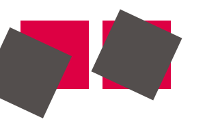
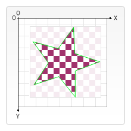

До сих пор использовали только сетку по умолчанию и изменили размер всего холста для наших нужд. При преобразованиях существуют более мощные способы изменения исходных координат в различные положение, поворот сетки и даже масштабирование.
Пример трансформации и анимации элементов на полотне canvas
Прежде чем перейти к методам преобразования, давайте рассмотрим два других метода, которые необходимы, когда вы начинаете создавать все более сложные рисунки.
save() - Сохраняет все состояние холста.
restore() - Восстанавливает последнее сохраненное состояние холста.
Состояние холста сохраняется в стеке. Каждый раз, когда вызывается метод save(), текущее состояние отрисовки записывается в стек. Состояние отрисовки содержит:
translate, rotate and scale – см. ниже).strokeStyle, fillStyle, globalAlpha, lineWidth, lineCap, lineJoin, miterLimit, lineDashOffset, shadowOffsetX, shadowOffsetY, shadowBlur, shadowColor, globalCompositeOperation, font, textAlign, textBaseline, direction, imageSmoothingEnabled.clipping path), которые будут рассматриваться в следующем разделе.Вы можете вызывать метод save() столько раз, сколько захотите. В то же время, при вызове метода restore() последнее сохранённое состояние будет считано из стека, и все сохранённые настройки будут восстановлены.
Пример сохранения и восстановления состояния холста
Здесь показано, как функционирует сохранение в стек состояния отрисовки на примере последовательной отрисовки набора прямоугольников.
var ctx = document.getElementById('canvas').getContext('2d');
ctx.fillRect(0, 0, 150, 150); // рисуем прямоугольник с настройками по умолчанию
ctx.save(); // сохраняем состояние
ctx.fillStyle = '#09F'; // вносим изменения в настройки
ctx.fillRect(15, 15, 120, 120); // рисуем прямоугольник с новыми настройками
ctx.save(); // сохраняем состояние
ctx.fillStyle = '#FFF'; // вносим изменения в настройки
ctx.globalAlpha = 0.5;
ctx.fillRect(30, 30, 90, 90); // рисуем прямоугольник с новыми настройками
ctx.restore(); // возвращаемся к предыдущим настройкам
ctx.fillRect(45, 45, 60, 60); // рисуем прямоугольник с восстановленными настройками
ctx.restore(); // возвращаемся к начальным настройкам
ctx.fillRect(60, 60, 30, 30); // рисуем прямоугольник с изначальными настройками
}
Сначала рисуется большой прямоугольник с настройками по умолчанию. Затем сохраняем состояние холста, после чего изменяем цвет заливки. Затем рисуем второй синий прямоугольник меньшего размера и опять сохраняем состояние. Снова изменяем какие-то настройки и рисуем третий полупрозрачный белый прямоугольник.
До сих пор действия ничем не отличались от тех, что делали в предыдущем разделе. Однако, как только сделали первый вызов restore(), последнее сохранённое состояние отрисовки было восстановлено из стека, вернув все сохранённые настройки. Если бы не сохранили предыдущее состояние, используя save(), нам бы пришлось менять цвет заливки и настройки прозрачности вручную для возврата к предыдущему состоянию. Для каких-нибудь двух простых свойств это, может быть, сделать не так сложно. Но если таких своиств гораздо больше, это чревато очень быстрым разрастанием кода.
Когда второй вызов restore() сделан, изначальное состояние (то самое, которое было сделано перед первым вызовом save) восстанавливается и последний нарисованный прямоугольник внось становится чёрным.
Первый метод для трасформирования холста translate(). Он используется для перемещения холста в любую точку нашей сетки.
translate(x, y) - Перемещение холста на сетке. x и y - смещение по горизонтали и вертикали соответственно.
Неплохая идея - сохранять canvas state перед использованием любых трансформаций. Обычно удобнее использовать метод restore, чем выполнять обратные преобразования, чтобы вернуться к начальному состоянию. Кроме того, если вы выполняете преобразования внутри цикла не используя save и restore, вы рискуете потерять часть рисунка, потому что он был нарисован за пределами края холста.
Пример использования translate
Этот пример демонстрирует некоторые преимущества при использовании смещения холста. Без использования метода translate() все прямоугольники будут отрисованы в одинаковой позиции (0,0). Метод translate() дает возможность размещения прямоугольника в любой позиции без изменения параметров функции fillRect(). Это может дать некоторое упрощение для понимания и использования.
Внутри функции draw() вызываем fillRect() девять раз, используя два цикла for. Каждый раз сохраняем состояние холста, смещаем его, рисуем прямоугольник, а затем восстанавливаем исходное состояние. Заметьте, что fillRect() всегда использует одни и те же параметры, а изменение позиции фигуры осуществляется с помощью translate().
var ctx = document.getElementById('canvas').getContext('2d');
for (var i = 0; i < 3; i++) {
for (var j = 0; j < 3; j++) {
ctx.save();
ctx.fillStyle = 'rgb(' + (51 * i) + ', ' + (255 - 51 * i) + ', 255)';
ctx.translate(10 + j * 50, 10 + i * 50);
ctx.fillRect(0, 0, 25, 25);
ctx.restore();
}
}
Второй метод трансформации rotate(). Он используется для поворота нашего холста.
rotate(angle) - Поворачивает наш холст по часовой стрелке вокруг начальной точки на угол anglе в радианах.
Центр поворота - всегда начало координат. Для изменения координат центра должны сместить холст, используя метод translate().
Пример использования rotate
В этом примере сначала используем rotate() для поворота прямоугольника относительно начала координат, а затем, используя translate() совместно с rotate() поворачиваем прямоугольник относительно его центра.
Углы измеряются в радианах, а не в градусах. Для преобразования единиц используйте следующую формулу: radians = (Math.PI/180)*degrees.
var ctx = document.getElementById('canvas').getContext('2d');
// left rectangles, rotate from canvas origin
ctx.save();
// blue rect
ctx.fillStyle = '#0095DD';
ctx.fillRect(30, 30, 100, 100);
ctx.rotate((Math.PI / 180) * 25);
// grey rect
ctx.fillStyle = '#4D4E53';
ctx.fillRect(30, 30, 100, 100);
ctx.restore();
// right rectangles, rotate from rectangle center
// draw blue rect
ctx.fillStyle = '#0095DD';
ctx.fillRect(150, 30, 100, 100);
ctx.translate(200, 80); // translate to rectangle center
// x = x + 0.5 * width
// y = y + 0.5 * height
ctx.rotate((Math.PI / 180) * 25); // rotate
ctx.translate(-200, -80); // translate back
// draw grey rect
ctx.fillStyle = '#4D4E53';
ctx.fillRect(150, 30, 100, 100);
Для поворота прямоугольника относительно его центра сначала смещаем начало координат, выполняем поворот, а затем выполняем обратное смещение к точке 0,0, и наконец рисуем прямоугольник.
Следующий метод трансформации холста - scaling. Он используется для растяжения, сжатия и отражения координатной сетки. Он может использоваться для отрисовки растянутых или сжатых по осям фигур и изображений.
scale(x, y) - Масштабирует координатную сетку холста по горизонтали и вертикали. Оба параметра - вещественные числа. Значения меньше 1.0 уменьшают, а больше 1.0 увеличивают масштаб сетки. Значение 1.0 не изменяет его.
Используя отрицательные значения вы можете зеркально отразить направление осей. Например, используя translate(0,canvas.height); scale(1,-1); вы получите хорошо известную декартову систему координат с началом в верхнем левом углу.
По умолчанию единица координатной сетки точно соответствует одному пикселю. Если же вы, например, зададите масштабный коэффициент 0.5, то единица сетки будет равна половине пикселя, и нарисованная фигура будет иметь размер в два раза меньше оригинала. Наоборот, если задать масштабный коэффициент 2.0, единица сетки будет соответствовать двум пикселям, а нарисованная фигура станет в два раза больше.
Пример использования scale
В этом примере нарисуем прямоугольники, используя разные масштабные коэффициенты.
var ctx = document.getElementById('canvas').getContext('2d');
// рисуем масштабированный прямоугольник.
ctx.save();
ctx.scale(10, 3);
ctx.fillRect(1, 10, 10, 10);
ctx.restore();
// размещаем текст, отраженный по горизонтали
ctx.scale(-1, 1);
ctx.font = '48px serif';
ctx.fillText('MDN', -135, 120);
Рассмотрим метод, который вызывает изменения в соответствии с матрицей преобразования.
transform(a, b, c, d, e, f) - Накладывает матрицу преобразования, заданную параметрами, на текущую матрицу. Матрица преобразования задается следующим образом:
Если какой-либо из аргументов является бесконечным, то матрица преобразования должна быть помечена как бесконечная, а не как метод, бросающий исключение.
Параметры функции:
a (m11) - Горизонтальное масштабирование.b (m12) - Горизонтальный перекос.c (m21) - Вертикальный перекос.d (m22) - Вертикальное масштабирование.e (dx) - Горизонтальное движение.f (dy) - Вертикальное движение.setTransform(a, b, c, d, e, f) - Сбрасывает текущую матрицу преобразования, а затем вызывает transform() в соответствии с аргументами.
resetTransform() - Сбрасывает текущую матрицу преобразования к значению по умолчанию. Аналогично вызову ctx.setTransform(1, 0, 0, 1, 0, 0);
Пример использования transform и setTransform
var ctx = document.getElementById('canvas').getContext('2d');
var sin = Math.sin(Math.PI / 6);
var cos = Math.cos(Math.PI / 6);
ctx.translate(100, 100);
var c = 0;
for (var i = 0; i <= 12; i++) {
c = Math.floor(255 / 12 * i);
ctx.fillStyle = 'rgb(' + c + ', ' + c + ', ' + c + ')';
ctx.fillRect(0, 0, 100, 10);
ctx.transform(cos, sin, -sin, cos, 0, 0);
}
ctx.setTransform(-1, 0, 0, 1, 100, 100);
ctx.fillStyle = 'rgba(255, 128, 255, 0.5)';
ctx.fillRect(0, 50, 100, 100);
можем не только рисовать новые фигуры за существующие формы, но также можем использовать его, чтобы замаскировать определенные участки, очистить разделы от холста (не ограничивается прямоугольниками, как clearRect() method does) и другое.
globalCompositeOperation = type - Это задает Тип операции композиции для применения при разработке новых форм, где Тип является строкой, идентифицирующей, какие из двенадцати операций композитинг в использовании.
Отсеченный контур похож на обычную форму холста, но он действует как маска, чтобы скрыть нежелательные части фигур. Это визуализируется на изображении снизу. Все, что выходит за пределы звезды, не будет нарисовано на холсте.
Если сравниваем отсеченный контур со свойством globalCompositeOperation на изображении, видим два режима композитинга, которые достигают более или менее того же эффекта в исходном и исходном состоянии. Наиболее важные различия между ними заключаются в том, что отсечение контура фактически никогда не обращается к холсту и контур обрезки никогда не влияет добавление новых форм. Это делает обрезку контура идеальным для рисования нескольких фигур в ограниченной области.
В лабораторной о рисовании форм, названы только stroke() и fill() методы, но есть третий способ можно использовать с контурами, так называемый clip().
clip() - Преобразует текущий выстраиваемый контур в отсечённый контур.
Используйте clip() вместо closePath() для закрытия контура и его преобразования в отсечённый контур вместо создания заполняющего или обрамляющего контура.
canvas использует отсечённый контур, который в точности совпадает по размеру с размером самого холста. Это означает, что никакого отсечения попросту не произойдёт.
Пример обрезки
В этом примере будем использовать круговую обрезку контура, чтобы ограничить рисование набора случайных звезд определенной областью.
var ctx = document.getElementById('canvas').getContext('2d');
ctx.fillRect(0, 0, 150, 150);
ctx.translate(75, 75);
// Create a circular clipping path
ctx.beginPath();
ctx.arc(0, 0, 60, 0, Math.PI * 2, true);
ctx.clip();
// draw background
var lingrad = ctx.createLinearGradient(0, -75, 0, 75);
lingrad.addColorStop(0, '#232256');
lingrad.addColorStop(1, '#143778');
ctx.fillStyle = lingrad;
ctx.fillRect(-75, -75, 150, 150);
// draw stars
for (var j = 1; j < 50; j++) {
ctx.save();
ctx.fillStyle = '#fff';
ctx.translate(75 - Math.floor(Math.random() * 150),
75 - Math.floor(Math.random() * 150));
drawStar(ctx, Math.floor(Math.random() * 4) + 2);
ctx.restore();
}
}
function drawStar(ctx, r) {
ctx.save();
ctx.beginPath();
ctx.moveTo(r, 0);
for (var i = 0; i < 9; i++) {
ctx.rotate(Math.PI / 5);
if (i % 2 === 0) {
ctx.lineTo((r / 0.525731) * 0.200811, 0);
} else {
ctx.lineTo(r, 0);
}
}
ctx.closePath();
ctx.fill();
ctx.restore();
В первых нескольких строках кода мы рисуем черный прямоугольник размером с холстом в качестве фона, а затем переводим начало координат в центр. Затем мы создаем круговой обтравочный контур, рисуя дугу и вызывающий clip(). Обрезанные контуры также являются частью состояния сохранения холста. Если бы мы хотели сохранить исходный обтравочный контур, мы могли бы сохранить состояние холста перед созданием нового.
Все, что нарисовано после создания отсеченного контура, появится только внутри этого пути. Вы можете видеть это четко в линейном градиенте, который нарисован далее. После этого набирается набор из 50 случайно расположенных и масштабированных звезд, используя drawStar(). Снова звезды появляются только в пределах определенного обтравочного контура.
Цель работы: Изучение трансформации элементов canvas, компоновка элементов на полотне.
Задание №1:
Создайте свой графиеский редактор с помощью технологии canvas, он должен содержать:
Задание №2:
Создайте новый canvas, используя трансформации элементов, нарисуйте снегопад со следующими критериями:
clip().